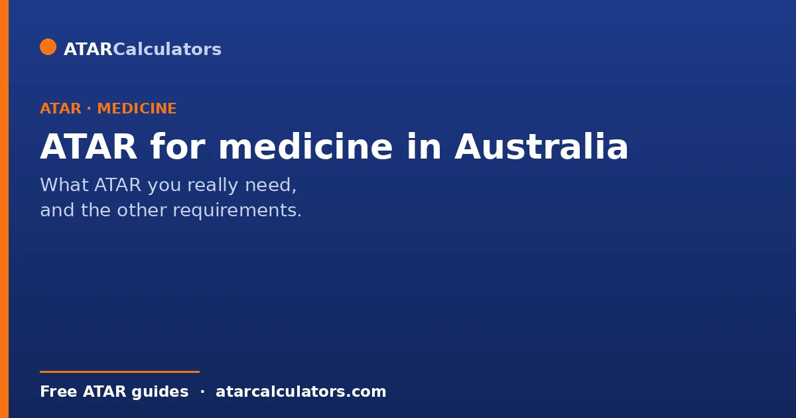
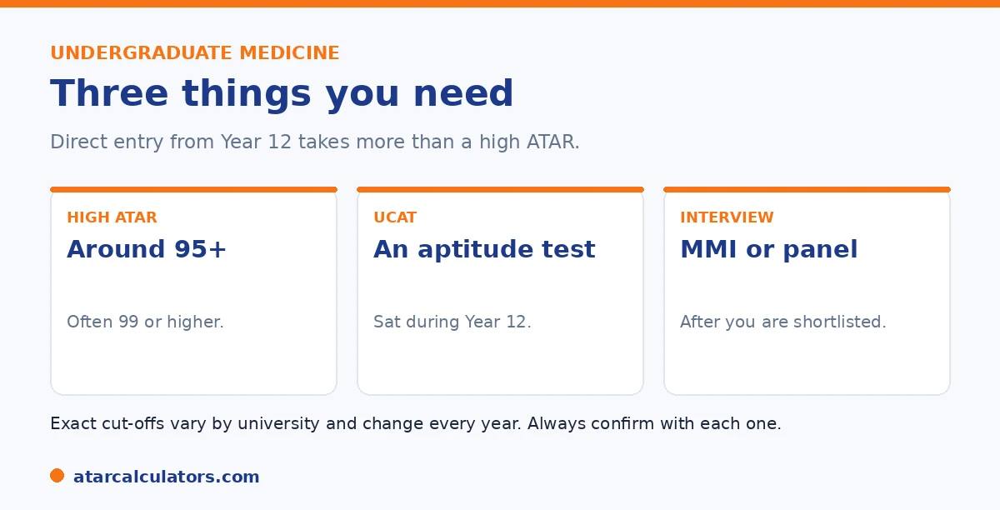

Here is the short version. For undergraduate medicine, you generally need a very high ATAR, often 95 and above, with many successful applicants sitting at 99 or higher. But the ATAR is only one part. You also need the UCAT, an aptitude test sat in Year 12, and to pass an interview. Exact cut-offs vary by university and change each year. The postgraduate route does not use ATAR at all, and that is how roughly half of medical students enter.
Few questions cause more worry than what ATAR you need for medicine. The honest answer is that it is high, but a high ATAR alone is not enough.
Below is the full picture, including the routes if you are not at 99. To explore your options, use our medicine ATAR calculator.
Key takeaways
- Undergraduate medicine needs a very high ATAR, often 95+.
- Many successful applicants sit at 99 or higher.
- You also need the UCAT and an interview.
- Exact cut-offs vary by university and change yearly.
- The postgraduate route does not use ATAR at all.
- Rural and bonded pathways can have lower ATAR floors.
What ATAR you really need
For undergraduate medicine, the working answer is an ATAR of 95 and above. But that is a floor, not a typical figure. Once the UCAT and interview are weighed in, the median successful applicant at many medical schools sits at 99 or higher.

So if you are aiming for direct entry from Year 12, treat 95 as the minimum and 99 plus as the realistic target. There are fewer than 1,000 undergraduate places nationally, so competition is intense.
It helps to understand why the bar sits so high. Medicine has far more qualified applicants than places. So universities need a way to shortlist. The ATAR is the cheapest, fastest filter they have. It is already calculated, already ranks everyone, and needs no extra assessment. That is why most schools use it as a threshold to decide who even reaches the interview stage. Clearing the threshold does not win you a place. It wins you the right to compete for one. Once you are past it, your ATAR often stops mattering and the UCAT and interview take over. That is why a 99.95 with a weak UCAT can lose to a 96 with a strong one.
Medicine needs more than an ATAR
This is the part many students miss. A high ATAR gets you considered, but it does not get you in on its own. Undergraduate medicine uses three things together: your ATAR, the UCAT, and an interview.
The UCAT is an aptitude test sat in Year 12. The interview is usually a multiple mini interview, or MMI, or a panel. The ATAR is often a hurdle you must clear to be considered for interview. For how they combine, see our UCAT and ATAR guide.
Cut-offs vary by university
There is no single national cut-off. Each university sets its own, and the figure changes each year with demand. Some of the highest direct-entry bars are at universities like UNSW, Monash, and Queensland's provisional pathway, often in the high 90s.
A few universities, such as James Cook and Bond, run undergraduate medicine without the UCAT, with their own requirements instead. So always check the specific university for current details.
It is worth knowing the main models. This is because they change your strategy. Most schools (UNSW, Monash, Adelaide, Western Australia, and others) use the ATAR plus UCAT plus interview combination, each weighting the three differently. A handful take a different path. James Cook weights rural and regional background heavily, and does not need the UCAT. Bond runs a full-fee program with its own entry process and multiple intakes a year. And several universities offer a guaranteed or provisional entry pathway where a very high ATAR (often 99+) secures a place with reduced weighting on other components. If your ATAR is your strongest asset, target the schools that weight it most. If your UCAT or interview is your edge, the reverse applies. Applying to the right mix of schools for your profile matters as much as the raw numbers.
Want to see your realistic options by ATAR?
Try the medicine ATAR calculator →Your options by ATAR band
Here is a rough guide to what is realistic at different ATAR levels. It is a guide only, since exact cut-offs vary.
| Your ATAR band | Realistic options |
|---|---|
| 95 and above | Direct entry at most undergraduate medical schools, with a strong UCAT and interview |
| 90 to 94 | Rural and bonded pathways become realistic, plus a strong UCAT |
| Below 90 | Graduate entry later, via a related degree and the GAMSAT |
A rough guide only. Exact cut-offs vary by university and change each year.
The key message is that no single ATAR closes the door to medicine. If direct entry is out of reach, other routes open up. See our guide on the lowest ATAR for medicine.
The postgraduate route ignores ATAR
If direct entry does not work out, the graduate route is not a consolation prize. It is how a large share of Australia's doctors qualify. You complete any bachelor degree first, sit the GAMSAT (the graduate equivalent of the UCAT), and apply to graduate-entry medicine as a postgraduate. Your Year 12 ATAR plays no part in that application.
This changes the calculation completely. A student who finishes school with an ATAR of 85 and cannot enter directly can still become a doctor. The path is doing well in an undergraduate degree, scoring strongly on the GAMSAT, and interviewing well three or four years later. What matters at that point is your university GPA, your GAMSAT score. And the interview, none of which existed in Year 12. So a lower ATAR delays the timeline and adds a degree. But it does not end the goal. Many students actually prefer this route because it gives them a fallback qualification and more maturity going into medicine. If you are weighing it up, read our comparison of the postgraduate and undergraduate routes.
One route changes the picture entirely. Postgraduate, or graduate-entry, medicine does not use your ATAR at all. You complete any approved bachelor's degree, then apply using your university results and the GAMSAT, plus an interview.
This matters because roughly half of Australian medical students enter this way. Some universities, including Sydney, Melbourne, and ANU, are postgraduate only and do not admit school leavers directly. See our undergraduate versus graduate guide.
Rural and bonded pathways
There are also pathways with lower ATAR floors. Rural pathways support students from a rural background, sometimes with a lower ATAR but residency conditions. Bonded medical places can have a lower ATAR in exchange for a return-of-service commitment after you graduate.
These deserve a closer look because the ATAR reduction can be substantial. Rural entry schemes exist because Australia has a shortage of doctors outside the cities. So medical schools actively lower the bar for students who grew up in rural and regional areas, typically defined by how long you lived in a qualifying postcode. If you are eligible, the effective ATAR requirement can drop by several points, and at some schools rural background is weighted so heavily that it becomes your strongest asset. Bonded places work differently. In return for a lower entry bar (or simply a guaranteed place), you agree to work in an area of need for a set period after you qualify. For a student committed to medicine who is happy to practise rurally, these are often the most realistic direct-entry routes of all. The one thing to get right is eligibility. Rural schemes need genuine rural residency history. So check the postcode and duration rules early, ideally before Year 12.
These are real routes into medicine, not consolation prizes. See our guides on rural medicine pathways and the lowest ATAR for medicine.
A realistic Year 12 plan for medicine
If medicine is your goal, the ATAR is only one of four things to manage, and the others need attention early. Here is a practical order of priorities through Year 12:
| Priority | Why it matters |
|---|---|
| Keep your ATAR above the threshold | You need to clear each school's hurdle to be considered. Aim for 99+ if you can, but do not sacrifice the UCAT to chase the last ATAR point. |
| Prepare properly for the UCAT | The UCAT is sat mid-year and often carries as much weight as the ATAR. Start practice months ahead; it rewards preparation more than most students expect. |
| Check pathway eligibility | Rural, bonded and equity schemes can lower your effective ATAR. Confirm which you qualify for before applications open. |
| Apply to the right mix of schools | Match your applications to your strongest component. A spread of schools with different weightings maximises your chance of an offer. |
| Practise for interviews | The MMI or panel is the final gate. It is a learnable skill; mock interviews make a real difference. |
Do not treat these as sequential. The UCAT and ATAR run in parallel through the year, so plan your time for both from the start.
Which universities offer undergraduate medicine?
A number of Australian universities offer undergraduate (straight-from-school) medicine, including UNSW, Monash, the University of Adelaide, Curtin, Bond, Western Sydney, the University of Newcastle, and James Cook. The exact list changes over time, so always confirm current offerings directly with each university.
Most of these combine a very high ATAR with the UCAT and an interview. A few differ: James Cook, for example, has historically focused on rural and tropical medicine with its own selection process rather than the UCAT. Requirements vary, so check each one.
Because programs and requirements shift year to year, treat any list as a starting point for your own research. The official medicine admissions page for each university is the source that matters, not a general summary.
The interview stage
Most undergraduate medicine programs use an interview as a final selection stage, often a multiple mini-interview (MMI), where you rotate through several short scenarios. It assesses communication, ethical reasoning, and how you think, rather than medical knowledge.
Only students who clear the ATAR and UCAT thresholds are usually invited to interview. So the interview is the last hurdle, not the first, and strong performance there can matter as much as your marks.
Preparing for the interview is worthwhile if you reach that stage. Practising how you communicate and reason under pressure helps, and it is a very different skill from the academic work that got you there.
Where the UCAT fits
The UCAT (University Clinical Aptitude Test) is required by most undergraduate medicine programs. You sit it in Year 12, and it tests reasoning and aptitude rather than curriculum content. See how the UCAT and ATAR work together.
Universities combine your ATAR, UCAT and interview in different proportions. A strong UCAT can strengthen an application, and at some universities it can partly offset a slightly lower ATAR, though the weighting differs everywhere.
Does a high ATAR guarantee a place?
No. Even a very high ATAR does not guarantee a medicine place, because entry also depends on the UCAT and interview. Medicine is one of the few fields where marks alone are not enough.
This is why students aiming for medicine should prepare for all three components, not just the ATAR. A brilliant ATAR with a weak UCAT or interview can still fall short, and a strong all-round application is what succeeds.
So treat the ATAR as necessary but not sufficient. Clearing the ATAR threshold gets you into contention; the UCAT and interview decide the outcome from there.
Applying interstate
You can apply for medicine interstate, and many students do to widen their options. Each state has its own admissions centre, and you may need to apply through more than one, so plan the logistics early.
Applying broadly, across several universities and states, improves your chances, because cutoffs and selection methods differ. A profile that misses at one university may succeed at another with different weightings.
Why aim above the cutoff
Because medicine cutoffs are extremely high and shift year to year, aim comfortably above the published figure rather than exactly at it. A small buffer protects you if demand rises or your result lands slightly below expectation.
Aiming high also keeps more universities open, since the highest cutoffs unlock the widest set of options. For a field this competitive, clearing the bar comfortably is a much safer target than just reaching it.
A realistic checklist
If medicine is your goal, a realistic plan covers four things: a very high ATAR, UCAT preparation from early in Year 12, interview practice if you progress, and broad applications across universities and states.
Building a strong backup plan matters too. Many students enter medicine through a graduate pathway after another degree, so a related science or health course is a solid alternative that keeps the door open. See postgraduate versus undergraduate medicine.
Subject prerequisites
Beyond a high ATAR, many medicine programs require or recommend specific subjects, most commonly Chemistry, along with your state’s English requirement. Some also value Biology or a higher level of mathematics.
Prerequisites vary between universities, so check each program’s requirements while you are still choosing Year 11 subjects. Missing a prerequisite can rule you out regardless of your ATAR, so this is worth getting right early. See subject strategy for medicine.
How to apply
Applications for medicine go through your state’s admissions centre, such as UAC, VTAC or QTAC, alongside any separate registration for the UCAT and for individual universities’ processes. The steps can differ by state and university.
Because medicine has extra components, start early and track each deadline: the admissions centre, the UCAT, and any university-specific applications. Missing one can cost you a place, so a simple checklist of dates is invaluable.
After you receive an offer
An offer for medicine may come with conditions, such as meeting the ATAR, UCAT and interview thresholds together, and completing enrolment steps. Read any offer carefully so you meet every condition attached to it.
If you receive more than one offer, weigh the programs on fit as well as prestige: location, structure, and whether the course suits how you want to study and train. The right program for you is not always the one with the highest cutoff.
Common questions
What ATAR do you need for medicine in Australia?
For undergraduate entry, generally 95 and above, with many successful applicants at 99 or higher once the UCAT and interview are weighed in. Exact cut-offs vary by university and change each year. The postgraduate route does not use ATAR.
Is 99.95 needed for medicine?
Not always, but the bar is very high. Some pathways sit close to 99, and 99.95 is reached by several applicants each year. A high ATAR is needed for direct entry, but it must be paired with a strong UCAT and interview.
Which universities offer undergraduate medicine?
Several, including UNSW, Monash, Adelaide, UWA, James Cook, and Queensland's provisional pathway, among others. A few, such as James Cook and Bond, do not need the UCAT. Sydney, Melbourne, and ANU are postgraduate only.
Do I need more than a high ATAR for medicine?
Yes. Undergraduate medicine uses your ATAR, the UCAT, and an interview together. The ATAR is often a hurdle to be considered for interview, but a strong UCAT and interview performance are also essential.
Can I do medicine without a 99 ATAR?
Yes. Rural and bonded pathways can have lower ATAR floors with conditions, and the postgraduate route does not use ATAR at all. Roughly half of Australian medical students enter through the postgraduate pathway.
Do all medical schools need the UCAT?
Most undergraduate ones do, but not all. James Cook and Bond run undergraduate medicine without the UCAT, with their own requirements. Graduate-entry programs use the GAMSAT instead. Check each university.
Check your medicine options
See realistic pathways into medicine based on your ATAR. Free, and no signup.
Open the medicine ATAR calculator →Related guides
This guide is general information for students and parents, not formal admissions advice. ATAR cut-offs, UCAT and GAMSAT requirements, interview formats and pathways vary by university and change every year. For graduate entry, applications run through GEMSAS, and the UCAT and GAMSAT are run by their own bodies. Any figures here are approximate and based on recent years. So always confirm the current details with each university and your state admissions centre (such as UAC, VTAC, QTAC, SATAC or TISC). Reviewed by the ATARCalculators Editorial Team.